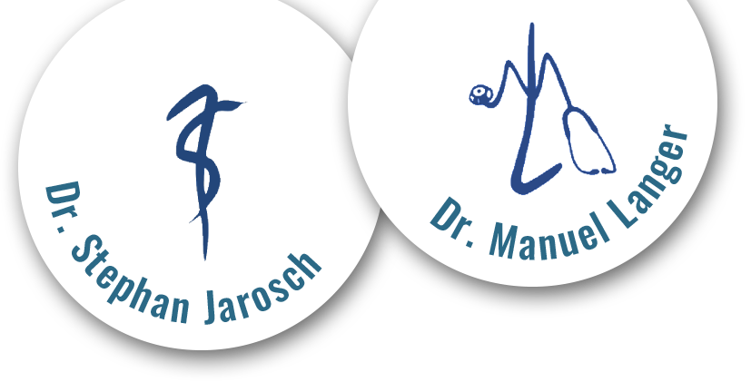
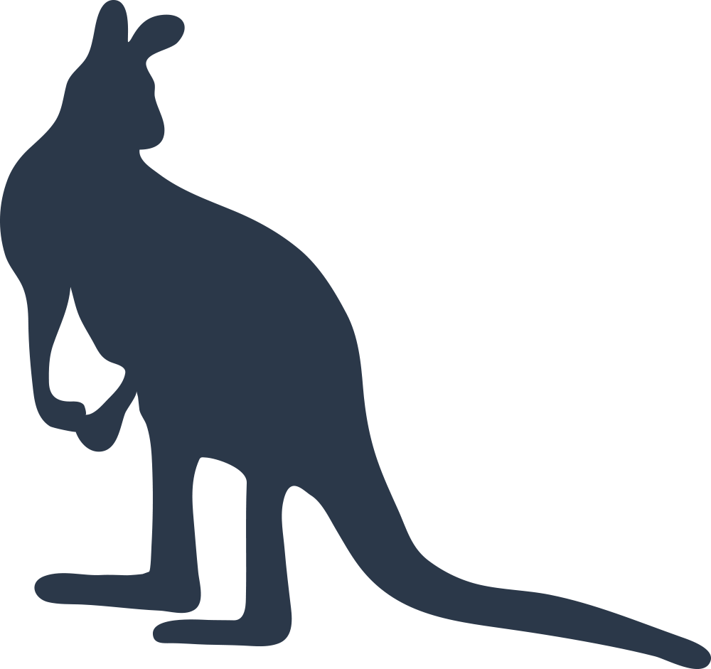
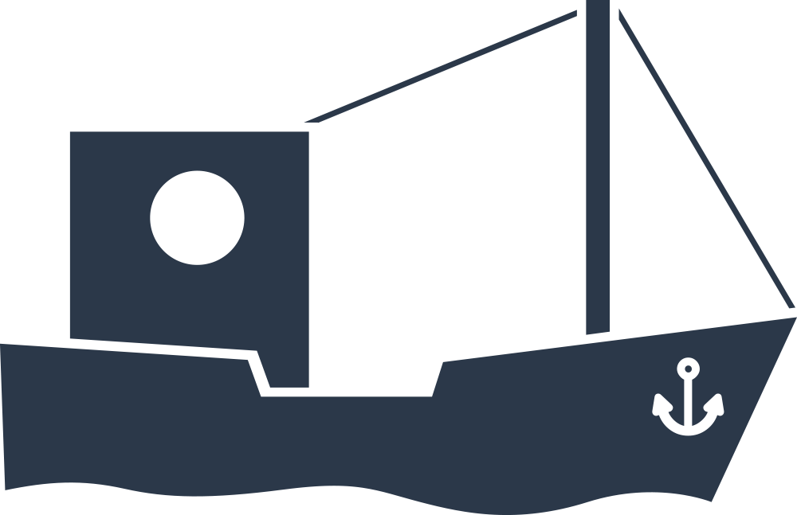

Kinder- & Jugendmedizin
Umfassende Betreuung und Vorsorge von Geburt an bis ins Jugendalter.
Die Gemeinschaftspraxis Dr. Jarosch & Dr. Langer in Würzburg-Lengfeld begleitet Ihr Kind von den ersten Tagen an – kompetent, herzlich und mit einem breiten medizinischen Angebot.


Ein breites Spektrum an fachärztlicher Diagnostik und Behandlung, spezialisiert auf die Bedürfnisse junger Patienten.
Umfassende Betreuung und Vorsorge von Geburt an bis ins Jugendalter.
Diagnostik und Behandlung von Atemwegs- und Lungenerkrankungen.
Abklärung und Therapie von Allergien – für ein beschwerdefreies Aufwachsen.
Erfahrene Betreuung von Neu- und Frühgeborenen und ihren Familien.
Behandlung von Magen-Darm-Beschwerden im Kindes- und Jugendalter.
Sorgfältige Untersuchung von Herz und Kreislauf des Kindes.
Schonende, strahlungsfreie Ultraschalldiagnostik direkt in der Praxis.
Begleitung der gesunden Entwicklung und der seelischen Gesundheit.
Schulungen und hilfreiche Informationen für Familien – fragen Sie uns gern.
0931 275200
In unserer Gemeinschaftspraxis betreuen Sie Dr. med. Stephan Jarosch und Dr. med. Manuel Langer mit einem eingespielten, freundlichen Team – jetzt in neuen, modernen Praxisräumen in Würzburg-Lengfeld.
Termine vereinbaren Sie bequem online oder telefonisch. Am Freitagnachmittag sind wir nach telefonischer Vereinbarung für Sie da.